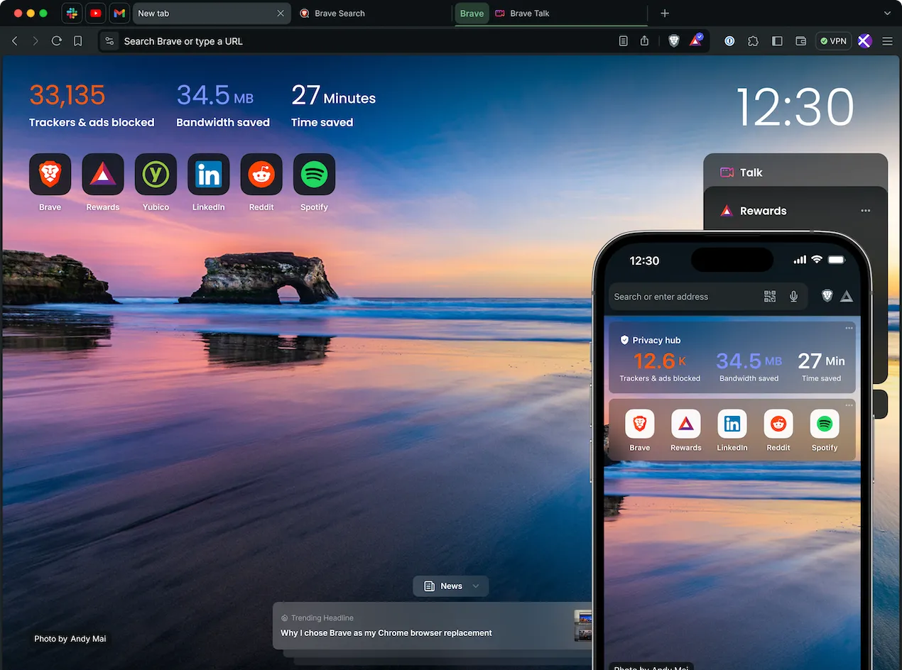
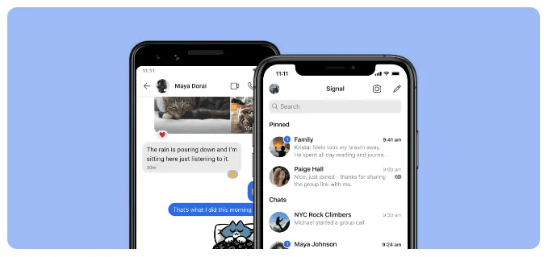

Here are three privacy respecting programs I recommend everyone switch to from their big tech counterparts.
Brave Browser

Brave is a chromium-based browser, meaning that it will have all the features that you are used to. Some notable features of brave browser are:
- Shields
Brave's built in tracker and ad blocker, protecting you from creepy stuff across the internet. it also saves you data by not loading these ads and trackers.
Learn more here
- Leo
Brave's private AI assistant. It can summarize articles and videos, and help you write and research. It's one of the most privacy respecting AIs out there
Learn more here
- Rewards
Brave's private ad system that still lets you tip out creators, by viewing private ads through $BAT. You can easily opt out.
Learn more here
There are many more features, those were just some of the most notable. You can Download brave and try all of them out here
Signal Messenger

There are a lot of good messaging apps out there, but my favorite is Signal. The best features are:
- End-to-End Encryption
Signal provides state-of-the-art end-to-end encryption for all messages and calls. The signal encryption protocol is one of the most respected in the world, and signal is one of the leaders in quantum-proofing encryption.
- Usernames
Signal has added usernames recently, making it easier to connect with other people without using your phone number.
- Stickers & Stories
Stickers and stories are fun features that signal includes.
You can download Signal here
Proton

Proton is probably the hardest switch in this list, but it may be worth it for you. Proton replaces email, drive, calendar, VPN, and password managers. Proton includes a pretty good free tier, but if you need more they have pretty good plans in my opinion
Proton end to end encrypts everything, which means that not even proton can look at what you have saved. It is a well respected and trusted service.

Start using Proton here